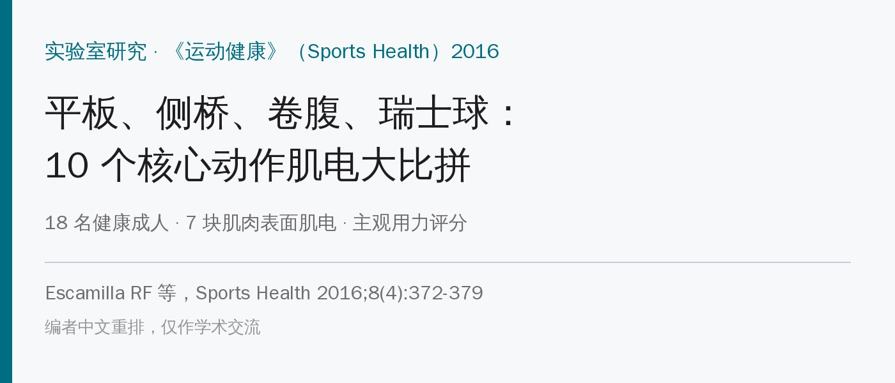
🔖原文信息（编者中文重排）
📚 文献信息
▪ Escamilla RF, Lewis C, Pecson A, Imamura R, Andrews JR. Muscle Activation Among Supine, Prone, and Side Position Exercises With and Without a Swiss Ball. Sports Health. 2016;8(4):372-379.
▪ 作者来自美国加州州立大学萨克拉门托分校物理治疗系、安德鲁斯研究与教育基金会
▪ 对照实验室研究；DOI：10.1177/1941738116653931
平板、侧桥、卷腹、瑞士球……核心训练的动作多得数不过来，但真正落到处方上，大家关心的是：哪个动作练哪块肌肉？哪个适合起步、哪个适合进阶？
这篇研究找了 18 个健康成人，把仰卧、俯卧、侧卧三类共 10 个动作挨个做一遍，同时测 7 块肌肉的表面肌电：上腹直肌、下腹直肌、腹外斜肌、腹内斜肌、腰椎旁肌、背阔肌、股直肌。另外还让受试者给每个动作打“主观用力”分。
先说结论：瑞士球俯卧伸髋激活最高、也最累；跪姿的平板和侧桥激活最低、最轻松。侧卧动作练腹外斜肌和腰椎旁肌更好，俯卧动作对腹直肌、腹内斜肌、背阔肌不输卷腹。
• 对象：9 男 9 女，23～45 岁，健康；测试前一周先来熟悉所有动作
• 节奏：每个动作1 秒到位 → 停 1 秒 → 1 秒回来，次与次之间休息 1 秒，用节拍器（每秒 1 拍）控制；每个动作做 5 次，顺序随机，动作之间休息约 2 分钟
• 肌电按最大自主等长收缩（MVIC）标准化：0～20% 低、21%～40% 中、41%～60% 高、> 60% 很高
• 主观用力用 6～20 分的 Borg 量表：6 毫不费力、9 很轻松、11 比较轻松、13 有点吃力、15 吃力
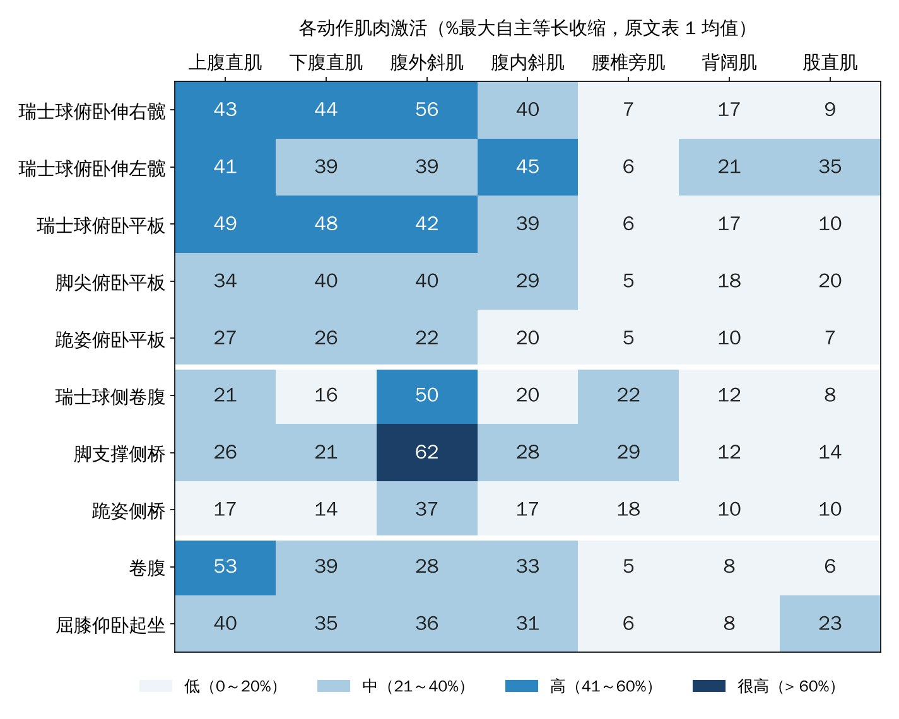
🔖各动作肌肉激活热力图（编者根据原文表 1 均值绘制）
先看这张图：颜色越深激活越高。下面按体位逐个讲。
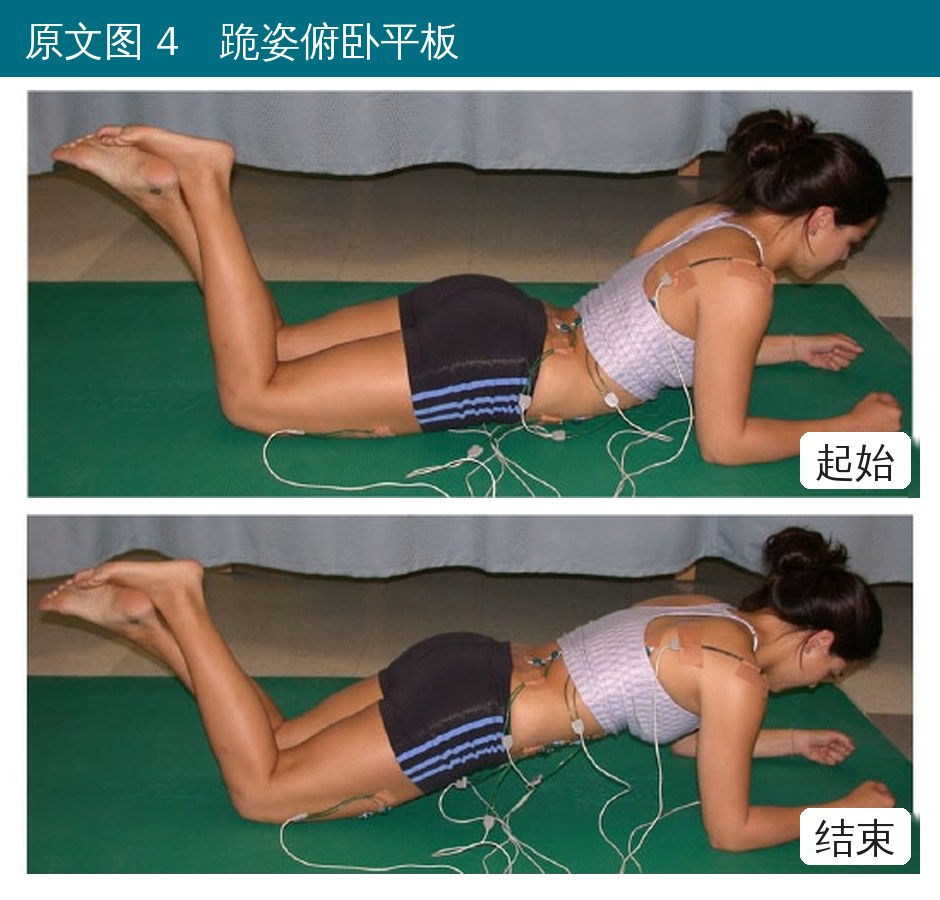
🔖原文图 4 跪姿俯卧平板
• 俯卧，前臂撑地，以膝为支点把身体撑起来成一条直线
• 激活：腹直肌约 26%～27%，腹外斜肌 22%，腹内斜肌 20%——全是中低
• 主观用力 8.9 分，10 个动作里最轻松，适合起步或需要减少脊柱压力的人
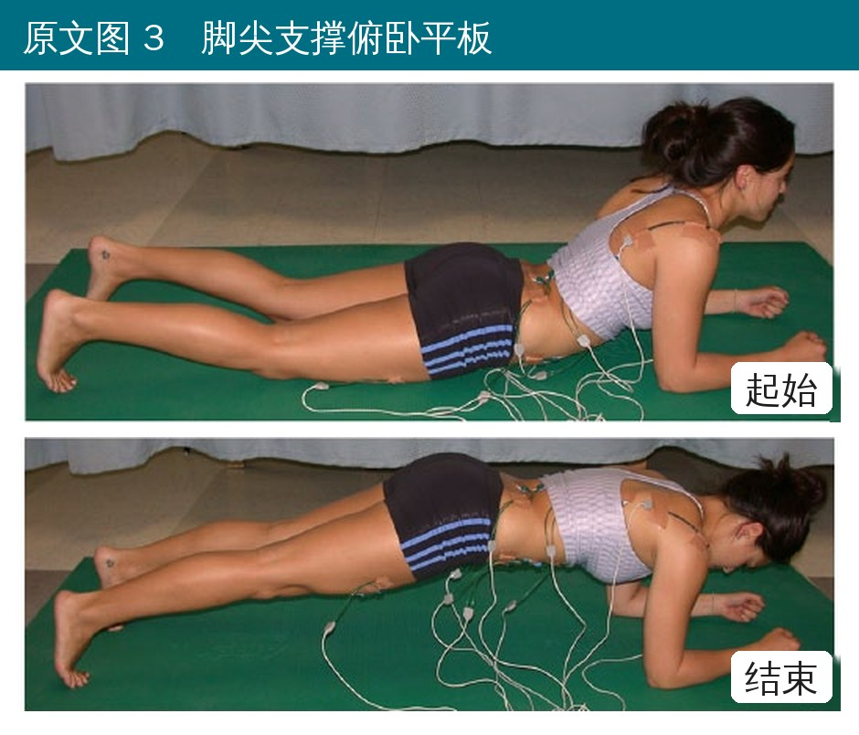
🔖原文图 3 脚尖支撑俯卧平板
• 同样前臂撑地，改成脚尖支撑
• 激活：腹直肌 34%～40%、腹外斜肌 40%、腹内斜肌 29%、股直肌 20%
• 和跪姿相比，各肌肉激活高出约 25%～185%，主观用力 11.9 分
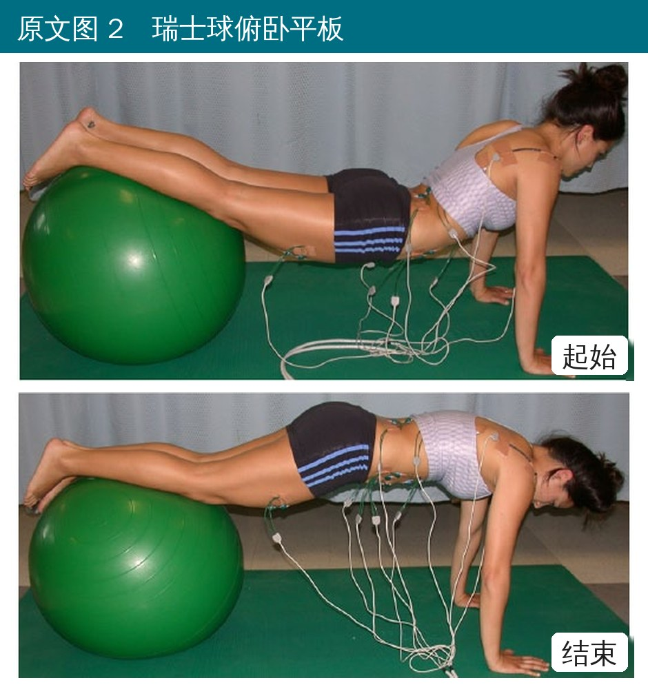
🔖原文图 2 瑞士球俯卧平板
• 双手撑地，小腿/脚背放在瑞士球上撑成平板
• 激活：上腹直肌 49%、下腹直肌 48%（两者都是所有动作里数一数二的），腹外斜肌 42%、腹内斜肌 39%
• 主观用力 11.8 分，和脚尖平板差不多
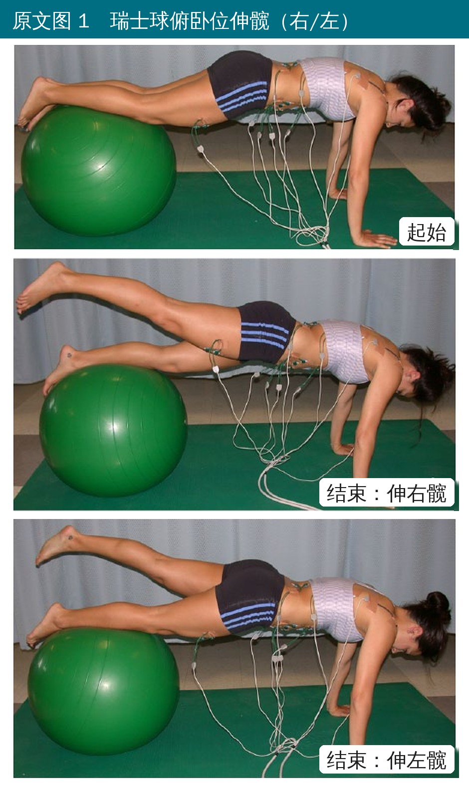
🔖原文图 1 瑞士球俯卧位伸髋
• 在瑞士球俯卧位上，一条腿伸髋抬起，另一条腿留在球上
• 伸右髋：腹外斜肌 56%、腹直肌 43%～44%、腹内斜肌 40%
• 伸左髋：腹内斜肌 45%、背阔肌 21%、股直肌 35%（支撑腿那侧的股直肌在用力）
• 主观用力 13.1 分，最难、整体激活也最高，适合进阶阶段
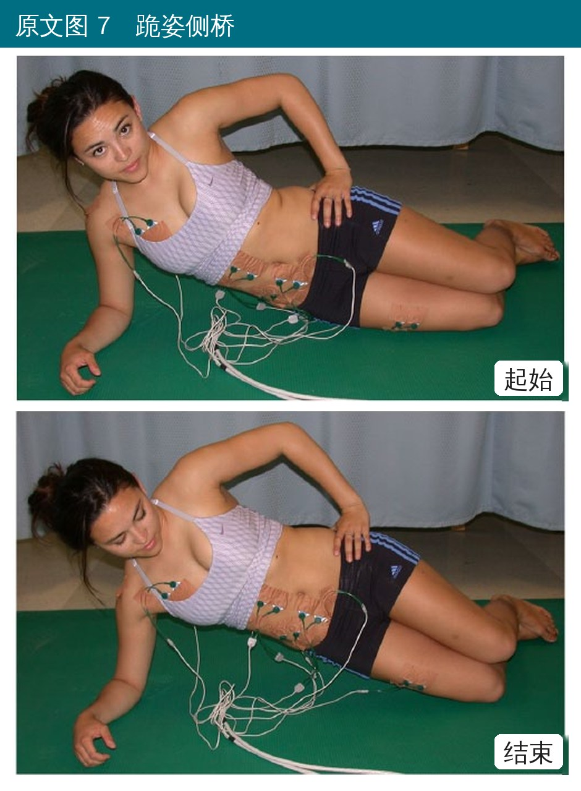
🔖原文图 7 跪姿侧桥
• 侧卧，前臂撑地，屈膝、以膝为支点把髋抬起
• 激活：腹外斜肌 37%、腰椎旁肌 18%，其余都低；主观用力 9.9 分
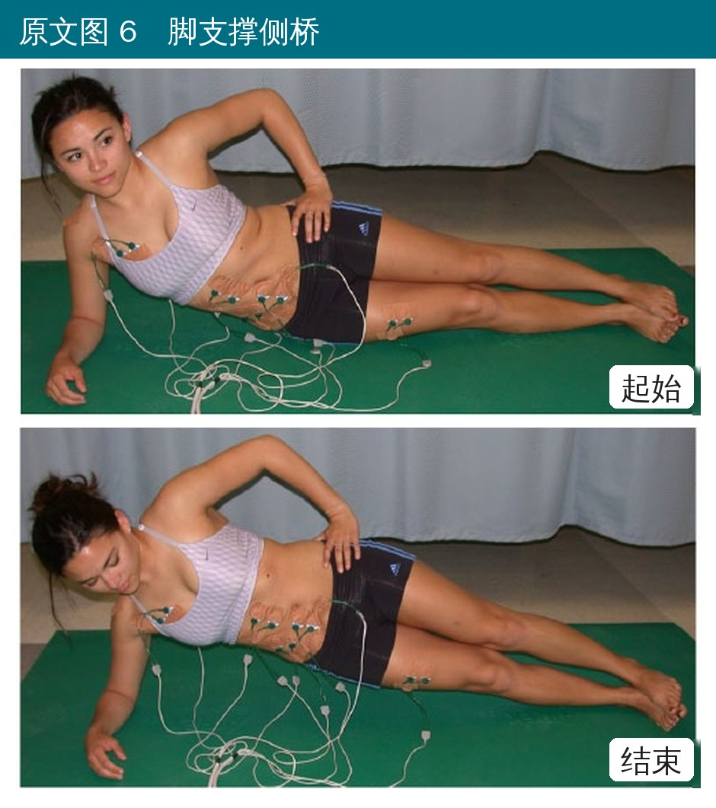
🔖原文图 6 脚支撑侧桥
• 侧卧，前臂撑地，双脚叠放支撑把髋抬起
• 激活：腹外斜肌 62%，全研究最高；腰椎旁肌 29%，也是最高
• 主观用力 11.2 分。注意：有研究测到侧桥时 L4～L5 压力约 2726 N，腰椎有问题的人要谨慎
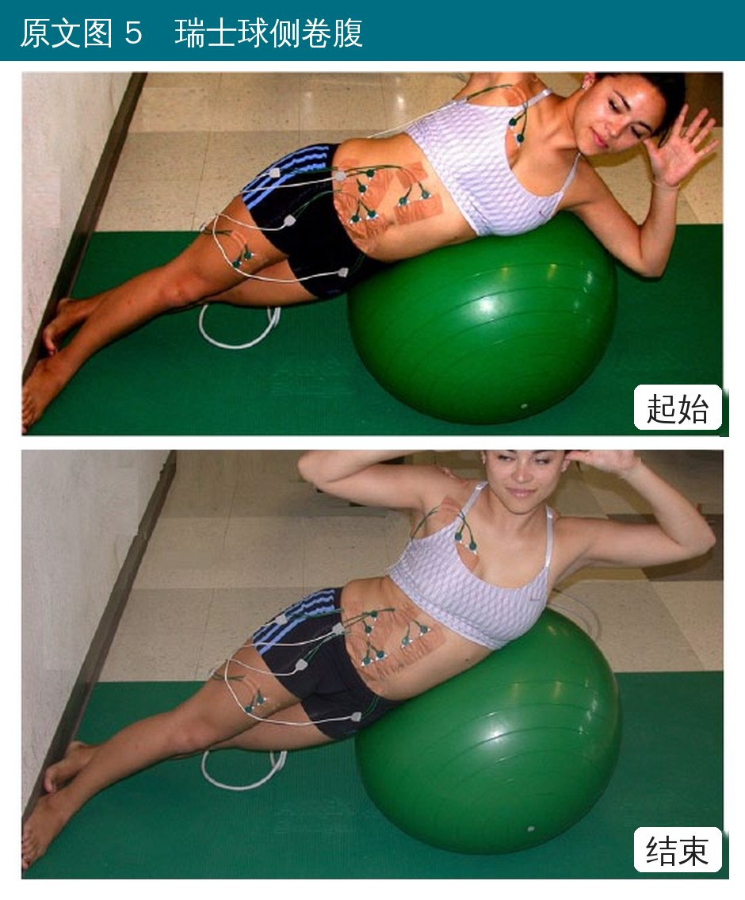
🔖原文图 5 瑞士球侧卷腹
• 侧身趴在瑞士球上，双脚抵墙固定，双手放头后，向上侧屈
• 激活：腹外斜肌 50%、腰椎旁肌 22%，腹直肌很低（16%～21%）；主观用力 11.2 分
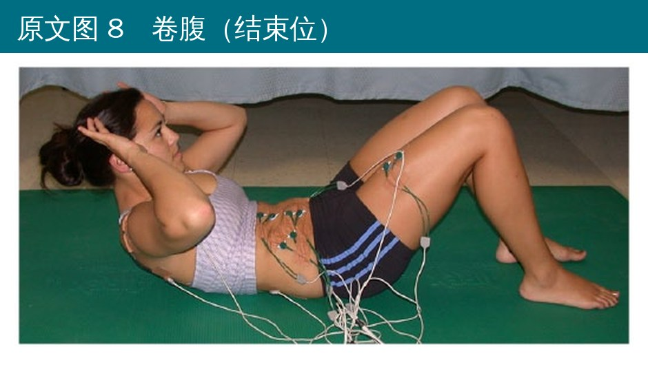
🔖原文图 8 卷腹
• 屈膝仰卧、手放头后，只把肩胛抬离地面
• 激活：上腹直肌 53%（全研究最高），腹内斜肌 33%，股直肌只有 6%
• 主观用力 10.2 分；腰椎屈曲只有约 3°
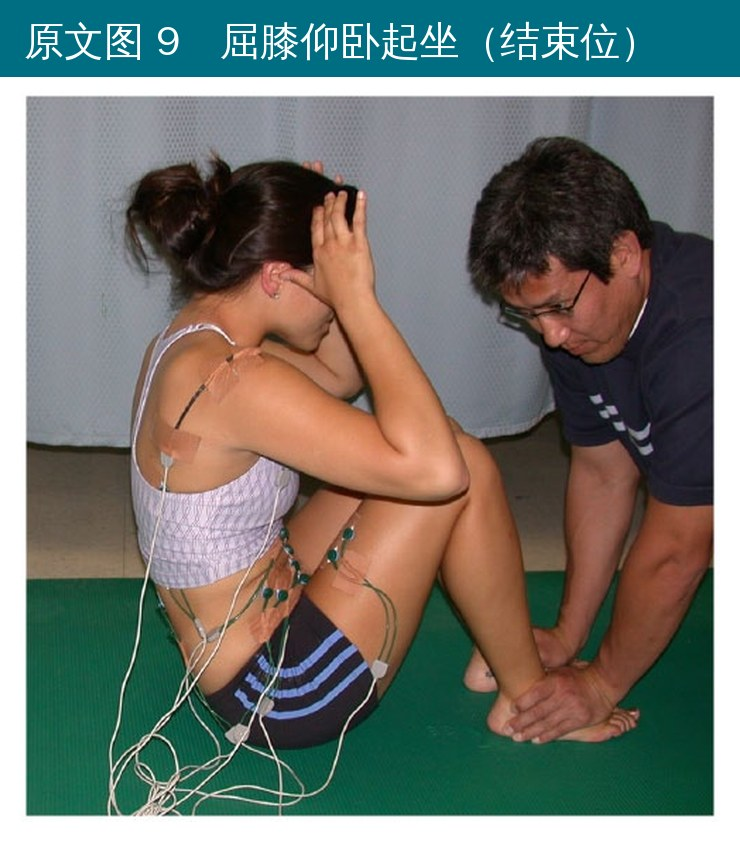
🔖原文图 9 屈膝仰卧起坐（有人压脚）
• 屈膝仰卧，有人压住脚，整个躯干坐起来
• 激活：上腹直肌 40%、腹外斜肌 36%、股直肌 23%
• 腰椎屈曲约 30°，椎间盘内压和腰椎压力都比卷腹大；腰椎间盘问题或骨质疏松的人要避开
• 俯卧 vs 仰卧：俯卧动作的腹直肌、腹内斜肌激活和卷腹差不多，腹外斜肌多 10%～100%、背阔肌多 110%～160%。俯卧时脊柱保持中立、腹肌等长收缩，而卷腹是向心屈曲
• 侧卧 vs 俯卧/仰卧：侧卧动作腹直肌、腹内斜肌、背阔肌激活明显低，但腰椎旁肌明显高
• 跪姿 vs 脚尖：跪姿激活低 25%～185%，也更轻松，压力更小
• 股直肌：瑞士球伸左髋 35%、屈膝仰卧起坐 23%、脚尖平板 20%。股直肌会把骨盆往前倾、加大腰椎前凸，腹肌弱或腰椎有问题的人要注意
• 腰椎旁肌：除侧卧动作外，其他动作都只有 5%～7%
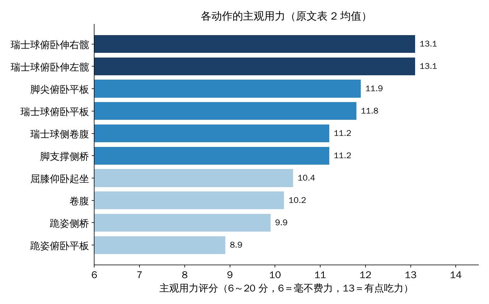
🔖各动作主观用力（编者根据原文表 2 均值绘制）
• 只有 18 个健康年轻人，没有腰痛病人；肌电只说明“哪块肌肉在用力”，不等于训练效果
• 做的是“1 秒上、停 1 秒、1 秒下”的动态版本，和平时长时间保持的平板不一样，结果不能直接套用
• 没说明肌电测的是哪一侧，侧卧动作是哪侧在下也没交代；而侧桥时下侧的腹斜肌和腰椎旁肌激活明显更高
• 10 个动作两两比较有 45 次，但 Bonferroni 校正用的是 0.05/9；瑞士球侧卷腹的腹内斜肌标准差写成 1（20 ± 1），明显不合常理
• 主观用力的文字描述和分数对不上：8.9 分标成“非常非常轻松”（应接近“很轻松”9 分），11.8 标成“比较轻松”
• 结论说“瑞士球和地面做相同动作时激活差不多”，但研究里真正同一动作有球无球对比的只有俯卧平板一组
把这些数字排一排，可以得到一个很顺手的核心训练进阶顺序：
| 阶段 | 推荐动作 | 理由 |
|---|---|---|
| 起步 | 跪姿俯卧平板、跪姿侧桥 | 激活中低、最轻松、脊柱压力小 |
| 进阶 | 脚尖平板、脚支撑侧桥、瑞士球平板 | 腹直肌、腹外斜肌升到中高 |
| 高阶 | 瑞士球俯卧伸髋 | 整体激活最高、最难 |
选动作时再看人：想练腹斜肌选侧桥；想练腹直肌又不想屈脊柱选瑞士球平板；腰椎间盘问题避开仰卧起坐，卷腹也要谨慎；小关节痛、椎管狭窄的人，俯卧这类偏伸展的动作反而可能不舒服，屈曲类的卷腹可能更合适；腰椎不稳或腹肌很弱的人，注意股直肌和腰椎旁肌激活高的动作。
原文表 1 各动作肌肉激活（%MVIC，均值 ± 标准差）
| 动作 | 上腹直肌 | 下腹直肌 | 腹外斜肌 | 腹内斜肌 | 腰椎旁肌 | 背阔肌 | 股直肌 |
|---|---|---|---|---|---|---|---|
| 瑞士球俯卧伸右髋 | 43（21） | 44（11） | 56（32） | 40（26） | 7（3）h,i,j | 17（13） | 9（5）b,d,f |
| 瑞士球俯卧伸左髋 | 41（24） | 39（19） | 39（19） | 45（25） | 6（3）h,i,j | 21（14） | 35（18） |
| 瑞士球俯卧平板 | 49（26） | 48（9） | 42（23） | 39（19） | 6（2）h,i,j | 17（10） | 10（7）b,d,f |
| 脚尖俯卧平板 | 34（15） | 40（10） | 40（21） | 29（12） | 5（2）h,i,j | 18（12） | 20（7）d |
| 跪姿俯卧平板 | 27（9）a,e | 26（9）a,c,d,e,f | 22（14）c,h,i | 20（8）c,d,e | 5（2）h,i,j | 10（6）c,d,e,f | 7（5）b,d,f |
| 瑞士球侧卷腹 | 21（11）a,b,c,d,e | 16（7）a～g | 50（26） | 20（1）c,d,e | 22（7）i | 12（5）d | 8（4）b,d,f |
| 脚支撑侧桥 | 26（15）a,e | 21（9）a～f | 62（37） | 28（12）d | 29（16） | 12（10）d | 14（4）b,d |
| 跪姿侧桥 | 17（10）a～f | 14（8）a～g | 37（27）i | 17（7）a,c,d,e | 18（6）i | 10（5）d,e,f | 10（4）b,d,f |
| 卷腹 | 53（19） | 39（16） | 28（17）c,i | 33（13） | 5（2）h,i,j | 8（3）c,d,e,f | 6（4）b,d,f |
| 屈膝仰卧起坐 | 40（13） | 35（14）e | 36（14）i | 31（11） | 6（2）h,i,j | 8（3）c,d,e,f | 23（12）d |
各肌肉在动作间差异均显著（P < 0.001）。上标表示显著低于：a 卷腹；b 屈膝仰卧起坐；c 瑞士球俯卧伸右髋；d 瑞士球俯卧伸左髋；e 瑞士球俯卧平板；f 脚尖俯卧平板；g 跪姿俯卧平板；h 瑞士球侧卷腹；i 脚支撑侧桥；j 跪姿侧桥。
原文表 2 各动作主观用力评分（均值 ± 标准差）
| 动作 | 评分 | 原文描述 |
|---|---|---|
| 瑞士球俯卧伸右髋 | 13.1（1.4） | 有点吃力 |
| 瑞士球俯卧伸左髋 | 13.1（1.4） | 有点吃力 |
| 瑞士球俯卧平板 | 11.8（1.6） | 比较轻松 |
| 脚尖俯卧平板 | 11.9（1.7） | 比较轻松 |
| 跪姿俯卧平板 | 8.9（2.1） | 非常非常轻松 |
| 瑞士球侧卷腹 | 11.2（2.2） | 比较轻松 |
| 脚支撑侧桥 | 11.2（2.2） | 比较轻松 |
| 跪姿侧桥 | 9.9（2.0） | 很轻松 |
| 卷腹 | 10.2（2.2） | 很轻松 |
| 屈膝仰卧起坐 | 10.4（2.5） | 很轻松 |
Borg 6～20 分：6 毫不费力；7 非常非常轻松；9 很轻松；11 比较轻松；13 有点吃力；15 吃力；17 很吃力；19 非常非常吃力；20 最大用力。
欢迎关注骨科康复小黄公众号，获取更多物理治疗的专业知识！
📄参考文献：
Escamilla RF, Lewis C, Pecson A, Imamura R, Andrews JR. Muscle Activation Among Supine, Prone, and Side Position Exercises With and Without a Swiss Ball. Sports Health. 2016;8(4):372-379. doi:10.1177/1941738116653931
原文版权归作者及出版方（SAGE）所有，并非知识共享协议开放获取。本文为学术交流用的中文解读，动作照片引自原文（英文字母已改为中文标注），热力图、条形图和表格为编者根据原文数据重绘/翻译，如有侵权请联系删除。